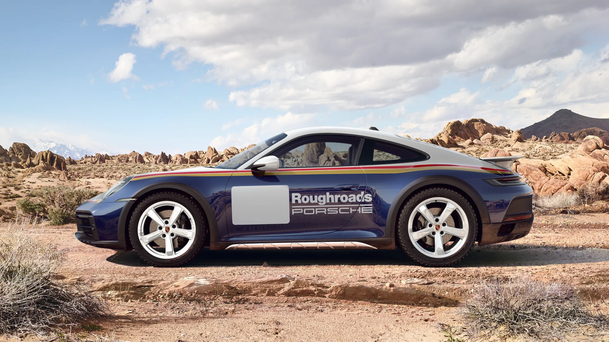
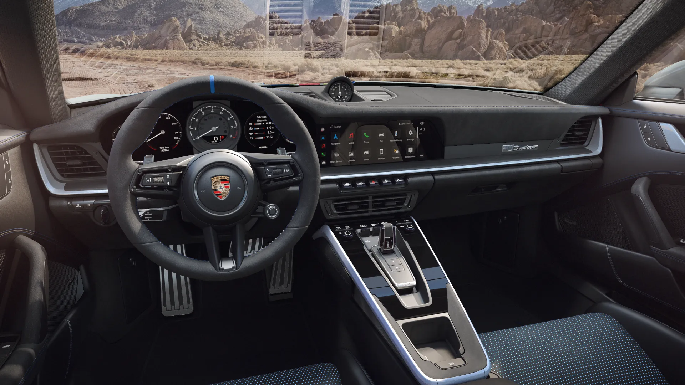

Porsche 911 Dakar: A Sports Car Like No Other
The Porsche 911 Dakar is the perfect blend of iconic Porsche design and off-road capability. Released as a limited edition, the Dakar offers a thrilling driving experience, both on and off the pavement. It’s powered by a 3.0-liter twin-turbo flat-six engine, producing a remarkable 473 horsepower.
With lifted suspension, all-terrain tires, and a rugged exterior, this 911 is built to handle the toughest conditions while maintaining Porsche's signature performance. The 911 Dakar accelerates from 0 to 60 mph in just 3.2 seconds, proving that adventure and speed can go hand in hand.
The interior is equipped with all the luxury you’d expect from Porsche. Premium materials, a driver-focused cockpit, and advanced infotainment technology ensure that every drive is comfortable and engaging. Whether you're cruising on the highway or tackling off-road trails, the 911 Dakar adapts to any environment effortlessly.